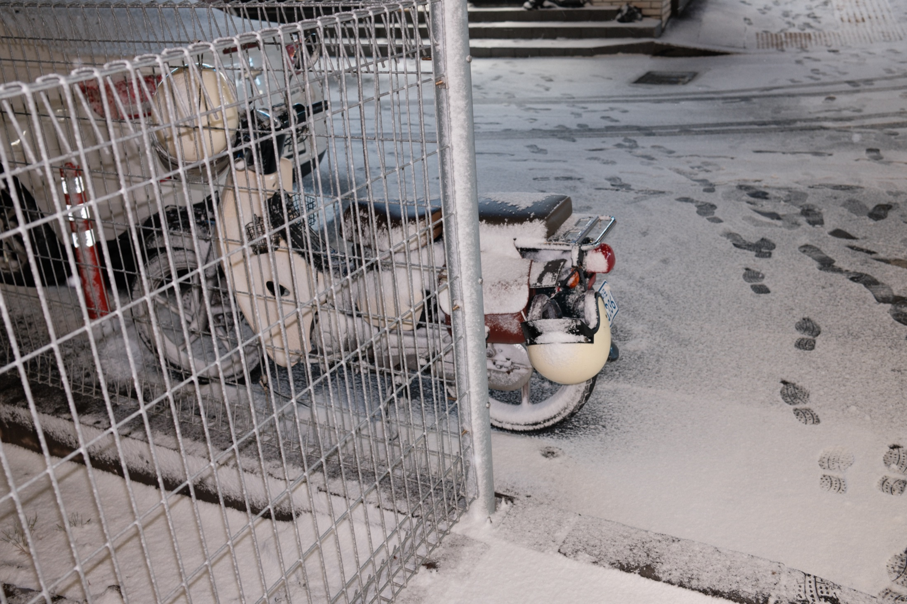
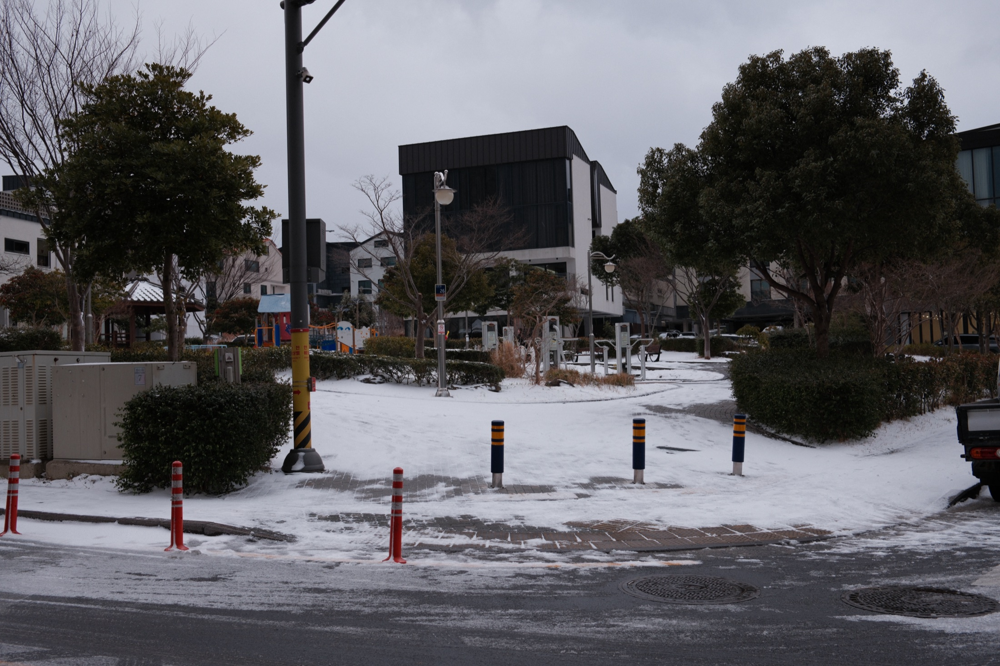
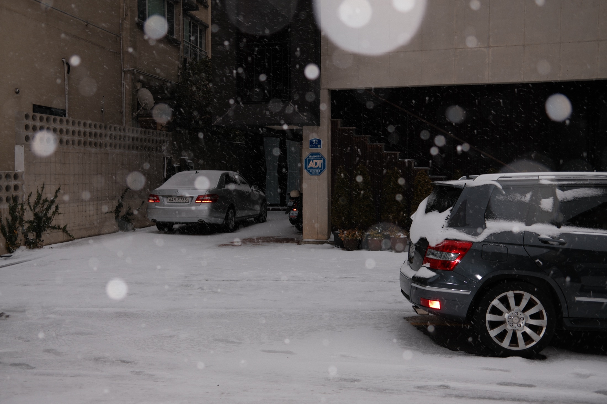
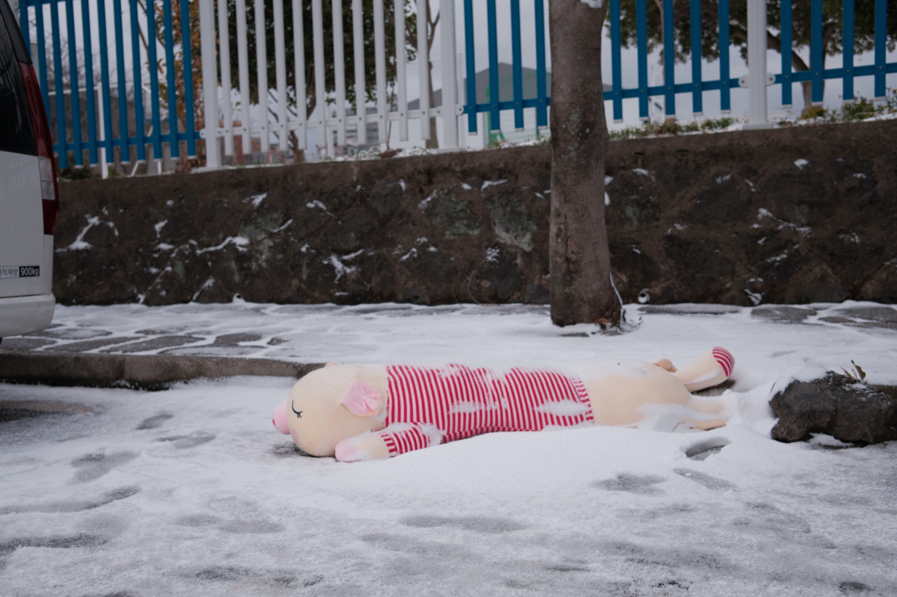
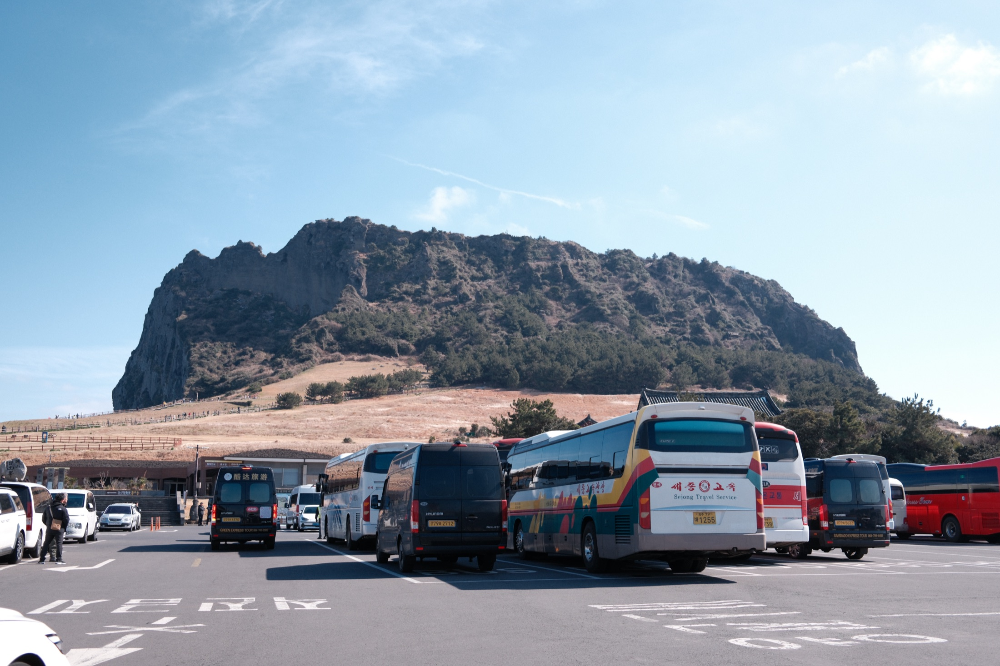
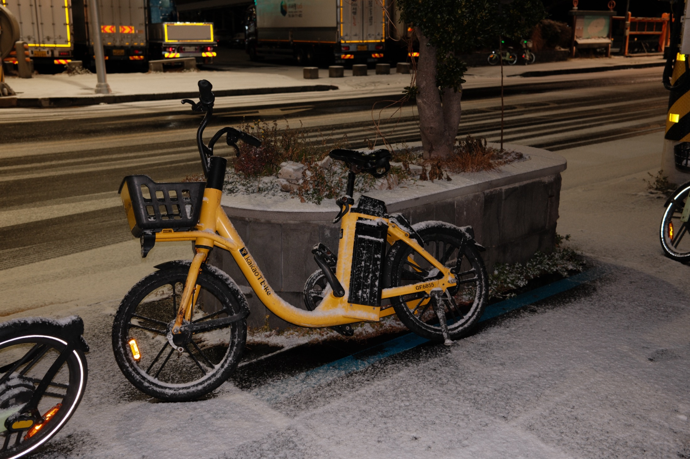

Reading
The images place nature beside fences, cars, buses, footprints, and emptied streets. The island is not only scenery; it is a landscape organized by looking, moving, waiting, and passing through.
04 / Distance arranged
Korean Jeju Island enters the portfolio as a place where distance is arranged by weather, tourism, roads, and small abandoned traces. Snow softens the surface, but the systems of arrival remain visible.

The images place nature beside fences, cars, buses, footprints, and emptied streets. The island is not only scenery; it is a landscape organized by looking, moving, waiting, and passing through.
The edge of escape. Even far from the city, Korean Jeju Island is framed by routes, weather, and traces that make beauty feel slightly left behind.






